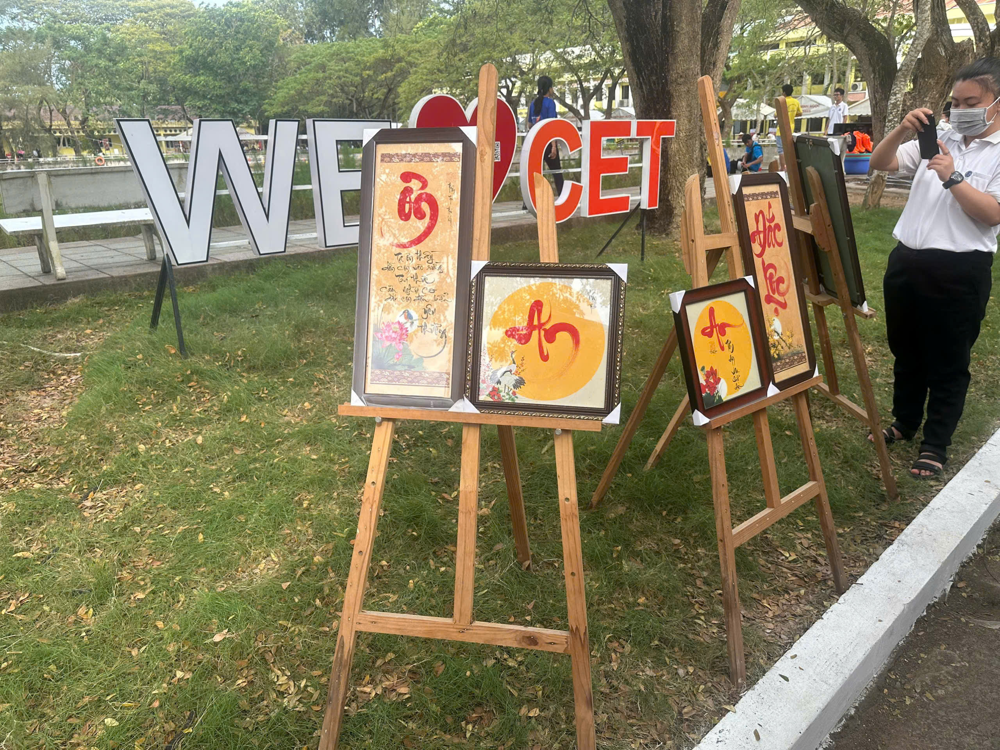

Thư pháp là một nét đẹp văn hóa truyền thống gắn liền với không khí Tết cổ truyền ở Việt Nam. Mỗi khi
mùa xuân về, hình ảnh ông đồ ngồi bên nghiên mực, giấy đỏ và những nét bút mềm mại lại trở nên quen
thuộc trong lòng mọi người. Thư pháp không chỉ đơn thuần là nghệ thuật viết chữ đẹp mà còn là cách gửi
gắm tâm tư, ước nguyện và những điều tốt lành cho năm mới.
Vào dịp Tết Nguyên Đán, nhiều người có thói quen xin chữ đầu năm để cầu mong may mắn, bình an và
thành công. Những chữ như “Phúc”, “Lộc”, “Thọ”, “An”, “Tâm” thường được viết trên giấy đỏ – màu sắc tượng
trưng cho sự may mắn và hạnh phúc. Người xin chữ tin rằng treo những chữ này trong nhà sẽ mang lại khởi
đầu thuận lợi và nhắc nhở bản thân sống tốt hơn trong năm mới. Hoạt động này không chỉ mang ý nghĩa
tâm linh mà còn thể hiện sự trân trọng đối với tri thức và truyền thống hiếu học của dân tộc.
Hình ảnh ông đồ cho chữ thường xuất hiện ở các hội hoa xuân, chợ Tết hoặc những địa điểm văn hóa nổi
tiếng như khu vực Văn Miếu - Quốc Tử Giám tại Hà Nội hay các con phố ông đồ ở Thành phố Hồ Chí Minh.
Không khí nơi đây luôn nhộn nhịp, rộn ràng, tạo nên một bức tranh mùa xuân vừa truyền thống vừa ấm áp.
Người lớn, trẻ nhỏ đều háo hức đứng xem từng nét bút uyển chuyển hiện lên, như thấy được cả tinh thần và
tâm huyết của người viết gửi vào từng con chữ.
Ngày nay, thư pháp không chỉ giới hạn ở chữ Hán – Nôm mà còn được sáng tạo với chữ Quốc ngữ, giúp
nhiều người dễ hiểu và gần gũi hơn. Dù hình thức có thay đổi, ý nghĩa tốt đẹp mà thư pháp mang lại vẫn
được gìn giữ. Hoạt động xin chữ đầu năm đã góp phần làm cho ngày Tết thêm trang trọng, ý nghĩa và đậm
đà bản sắc dân tộc. Thư pháp vì thế không chỉ là nghệ thuật, mà còn là cầu nối giữa quá khứ và hiện tại, giữa
truyền thống và đời sống hiện đại mỗi độ xuân về.